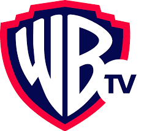
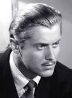

About
Warner TV is a brand available across Asia Pacific and it’s created and distributed by Turner Broadcasting System Asia Pacific. Warner TV is a Time Warner company that focuses on airing American Tv series and films.
Description
Warner TV offers viewers around the globe a chance to get an unprecedented mix of hit TV series and blockbuster movies. Its line-up boasts the world’s biggest franchises first run exclusives and fan-favourites across a wide range of genres of action, comedy, and drama.
Founded
March 21, 1955
By:
William T. Orr was an American television producer associated with a series of western and detective programs of the 1950s-1970s. Born William Ferdinand Quinn Jr., he took his stepfather's last name in childhood, and adopted the middle initial 'T' in honour of the maiden name of his mother, Gladys Turney.
Some Popular Shows From Warner Bros